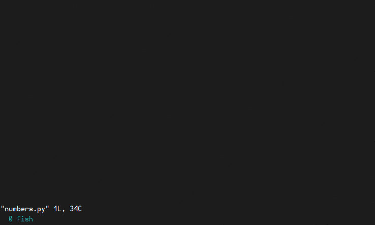

This is my personal Vim configuration, built according to my personal preferences, without any justification to think it's the best possible vim configuration. If you like it, great! :) It's mainly oriented to python software development, but many of its features are useful for other languages and editing tasks.
Using Neovim?
Good news!! I have a newer Neovim config :)
Warning: Feature freeze
I have switched to Neovim. I'll keep fixing issues to this config, but I won't be adding new features or improvements. I recommend you making the jump and switching to Neovim, with my Neovim config :)
Some of the best features (full list here):

Install | Upgrade
0) You will need a vim compiled with python support. Check it with vim --version | grep +python
Also, your .vim folder should be empty. If you have one, rename it or move to a different location (to keep a backup, just in case you want to go back).
1) Install the required dependencies:
sudo apt-get install curl vim exuberant-ctags git ack-grep sudo pip install pep8 flake8 pyflakes isort yapf
2) Download the .vimrc file and place it in your linux home folder.
3) Open vim and it will continue the installation by itself. Wait for it to finish... and done! You now have your new shiny powerful vim :)
Optional: If you want fancy symbols and breadcrumbs on your status line, check this small tutorial.
Docker: Federico Gonzalez (FedeG) made a docker image which runs vim with this config inside, you can find it here or in docker hub.
IMPORTANT!
If you come from a version of fisa-vim-config older than 8.0, you should move your .vim folder to a backup location and perform a clean installation.
This is because of the new plugin manager. The config version is specified in the third line of the .vimrc file. If it's not there, then it's older
than 8.0.
If you come from an older version of fisa-vim-config and want to upgrade it to the latest release, follow these steps:
1) Dowload the new version of the .vimrc file and replace the old one you have.
2) Install the dependencies listed in the install section.
3) Open vim and run:
:PlugClean :PlugInstall :PlugUpdate
This will remove plugins no longer used, install any new plugins, and update the existing ones to the last versions. It can be useful to look at the changelog.